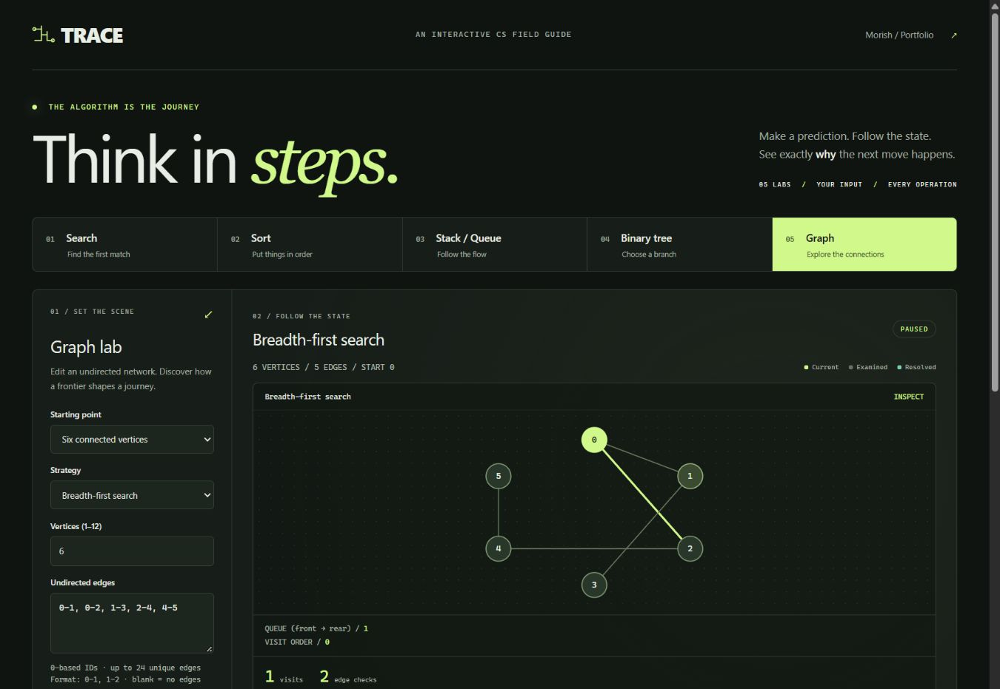

INDEPENDENT PROJECT / COMPUTER SCIENCE EDUCATION
TRACE
Predict the next step. Watch what changes. Go back and inspect why.
Open the learning lab ↗ · Source and setup ↗
Interactive learning tool / no code execution serviceThe problem.
An algorithm animation can show that something changed without making the reason easy to inspect. TRACE connects each visible change to pseudocode, operation counts, and an explanation, while letting a learner return to any earlier state.
What was built.

TRACE provides editable examples in search, sorting, stacks and queues, binary search trees, and graph traversal. A shared timeline links diagrams to pseudocode, counters, and a plain-language explanation of each step.
Visitors can play an execution, step forward, return to an earlier state, or change the input. Optional prediction questions pause the sequence so the learner can answer before seeing what happens next.
The hardest technical choice.
Algorithms produce immutable execution snapshots. Each snapshot stores the state, highlighted elements, counters, explanation, and pseudocode position. Rendering a snapshot never executes another algorithm step, so moving backward and replaying preserve the same result.
Search and sorting comparisons use the same input on both sides. Binary search finds the first matching index, tree inputs use distinct values, and graph traversal follows a deterministic neighbor order.
Verification and proof.
The project README documents the labs, counter definitions, controls, and limits. Tests compare outputs with independent expected results and exercise duplicate values, missing targets, container boundaries, disconnected graphs, and recorded-state replay.
Honest limitations.
Input limits keep examples readable, and validation explains inputs that cannot run. Operation counters describe the work performed by each implementation; playback speed controls presentation, not measured algorithm runtime.
The app runs locally without accounts or external runtime dependencies. It demonstrates selected algorithms, does not execute arbitrary source code, and does not claim measured learning outcomes.